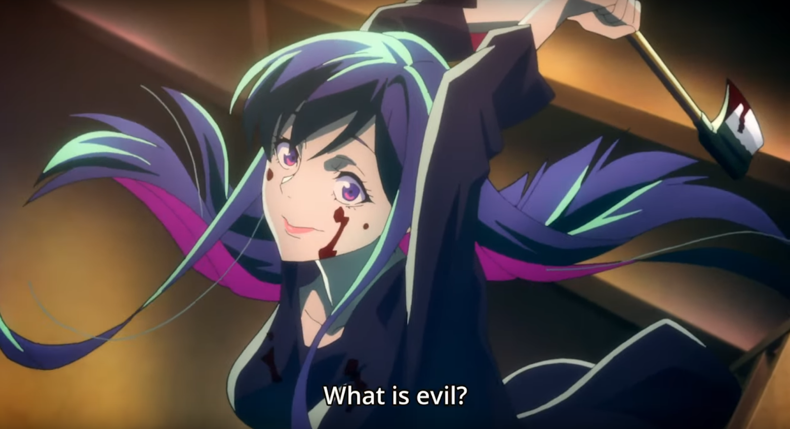

SYNOPSIS :
In the newly formed Shiniki district of Tokyo, Zen Seizaki is a diligent public prosecutor at the Tokyo District Public Prosecutors Office. Assigned to a case involving false advertisement, Zen—along with his assistant officer, Atsuhiko Fumio—investigate Japan Supiri, a pharmaceutical company that had provided fabricated clinical research on the company's new drug. While investigating the file of Shin Inaba, an anesthesiologist connected to the crime, the case takes a dark turn when Zen finds a page stained with a mixture of blood, hair and skin, along with the letter "F" scribbled all across the sheet. As he investigates further, the case goes beyond Zen's imagination and becomes vastly complex, challenging his sense of justice and his knowledge of the truth. Digging deeper into the investigation, Zen begins to uncover a concealed plot behind the ongoing mayoral election and ties to many people of interest involved in the election and those closer than he thinks. The case grows more severe and propels Zen into an unforeseen hurricane of corruption and deceit behind the election, the establishment of the Shiniki district, and the mysterious woman associated with it all.
WHAT'S GOOD ABOUT IT....??
Every now and then a show comes along and has an absolutely amazing start, dazzles with great narrative, action, characters, etc and then it throws it all away at the end. Unfortunately, this is one of those. Babylon offers one of the most interesting examinations of the classic philosophical debate of Good vs Evil I have ever seen. While on paper, it’s easy for us to say what’s right and what’s wrong, in reality, it’s often much more difficult. Life is more often in shades of grey than black and white. Babylon does a really good job of making you question everything you thought you knew in terms of morality. Unfortunately, the show's premise goes by the wayside in one of the worst endings I have ever seen in anything. The show deals with a recently passed legislation in a newly built city adjacent to Tokyo which legalises suicide. Unfortunately, not all of the people choosing to take advantage of this new law are doing so under their own will. Tokyo Prosecutor Zen Seizaki is tasked with investigating the cause of this movement and of several suspicious deaths and eventually finds himself involved in a philosophical and moral battle that’s bigger than he could have ever imagined. Babylon doesn’t have much in the way of physical action in terms of fights, explosions, etc, so if you’re looking for that, this is not the show for you. What it makes up for it with is a mature story, absolutely masterful writing(first half), tension and direction that will consistently leave you on the edge of your seat, in my opinion, the greatest anime villain of all time (Magase) and challenging you to examine your own definition of morality. The art is really well done and is quite unique in my opinion, the score is brilliant and adds a lot to the tension in scenes, the Voice acting is also top notch, particularly the work done by Yukino Satsuki(Magase). I will warn you that the tone of the show shifts quite dramatically after episode 7, there was a 6 WEEK break between episodes 7 and 8 which really killed a lot of the momentum of the show, and once the show resumed, the tone shifted from a fast paced detective thriller to a much more philosophical and narrative driven experience akin to End of Eva, which some people didn’t like, I personally enjoyed the shift initially, but things began to go south real soon. Overall, Babylon started as one of my favourite shows of the year, and ended as one of the most disappointing I've ever seen. This was purely self inflicted damage. The author was on the cusp of greatness and let it slip, completely with an ending that is as nonsensical as they come. I still would recommend giving this a watch, as I believe Magase is one of the best anime villains ever in terms of pure evil and being an unstoppable force. I also believe the first 7 episodes are some of the best you will see, just have tempered expectations for the finale.